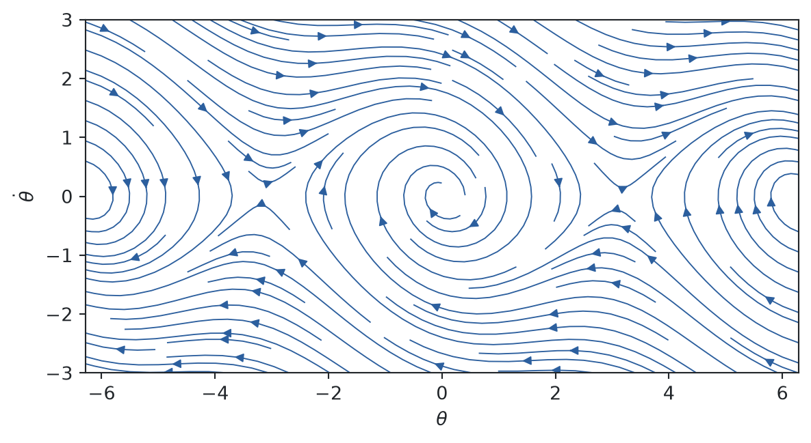
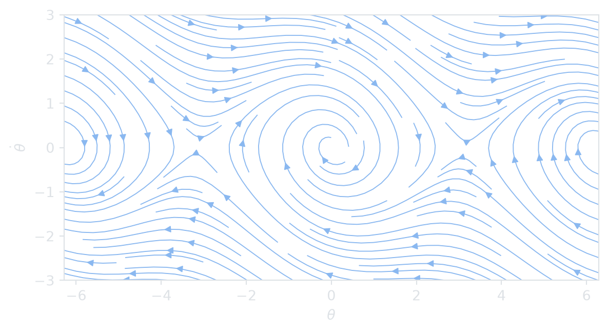

Nam Le
26 September 2026
Consider a flow \(\flow_t : \R^n \to \R^n\) generated by \[ \dot x = f(x), \qquad x \in \R^n. \tag{1}\]
Definition 1 (Hyperbolic fixed point) A point \(p \in \Fix(\flow)\) is hyperbolic if \(Df(p)\) has no eigenvalues on the imaginary axis.
Theorem 1 (Hartman–Grobman) Near a hyperbolic fixed point (Definition 1), the flow of Equation 1 is topologically conjugate to its linearization (Strogatz 2015).
Proof. Omitted.
Figure 1 shows the damped pendulum \(\ddot\theta + 0.3\,\dot\theta + \sin\theta = 0\).
import numpy as np
import matplotlib.pyplot as plt
th, om = np.meshgrid(np.linspace(-2*np.pi, 2*np.pi, 40), np.linspace(-3, 3, 30))
# One figure per theme; Quarto shows the one matching the reader's light/dark mode.
for fg, line in [("#212529", "#2c5f9e"), ("#dee2e6", "#8ab8f0")]:
with plt.rc_context({"text.color": fg, "axes.labelcolor": fg, "axes.edgecolor": fg,
"xtick.color": fg, "ytick.color": fg,
"figure.facecolor": "none", "axes.facecolor": "none"}):
fig, ax = plt.subplots(figsize=(7, 3.5))
ax.streamplot(th, om, om, -np.sin(th) - 0.3*om, density=1.2, linewidth=0.7, color=line)
ax.set_xlabel(r"$\theta$")
ax.set_ylabel(r"$\dot\theta$")
plt.show()

Drag the slider to change \(c\) in \(\ddot\theta + c\,\dot\theta + \sin\theta = 0\). The trajectories are computed in your browser, so nothing here depends on the frozen Python output. At \(c = 0\) the orbits around the origin close up; any \(c > 0\) turns them into spirals.
// Integrate a grid of initial conditions with RK4.
trajectories = {
const f = ([th, om]) => [om, -Math.sin(th) - c * om];
const step = (x, h) => {
const k1 = f(x);
const k2 = f([x[0] + h/2 * k1[0], x[1] + h/2 * k1[1]]);
const k3 = f([x[0] + h/2 * k2[0], x[1] + h/2 * k2[1]]);
const k4 = f([x[0] + h * k3[0], x[1] + h * k3[1]]);
return [x[0] + h/6 * (k1[0] + 2*k2[0] + 2*k3[0] + k4[0]),
x[1] + h/6 * (k1[1] + 2*k2[1] + 2*k3[1] + k4[1])];
};
const starts = [];
for (let th0 = -2 * Math.PI; th0 <= 2 * Math.PI + 1e-9; th0 += Math.PI / 3)
for (const om0 of [-2.8, -1.2, 1.2, 2.8]) starts.push([th0, om0]);
return starts.flatMap((x0, id) => {
let x = x0;
const pts = [{id, th: x[0], om: x[1]}];
for (let i = 0; i < 800 && Math.abs(x[0]) < 2 * Math.PI + 1 && Math.abs(x[1]) < 4; i++) {
x = step(x, 0.025);
pts.push({id, th: x[0], om: x[1]});
}
return pts;
});
}Plot.plot({
className: "phase-plot",
width,
height: 340,
x: {domain: [-2 * Math.PI, 2 * Math.PI], label: "θ"},
y: {domain: [-3, 3], label: "θ̇"},
marks: [
Plot.line(trajectories, {x: "th", y: "om", z: "id", stroke: "currentColor", strokeWidth: 1.1, strokeOpacity: 0.8, clip: true}),
Plot.dot([-2, -1, 0, 1, 2].map(k => ({th: k * Math.PI, saddle: k % 2 !== 0})),
{x: "th", y: () => 0, r: 4, fill: d => d.saddle ? "none" : "currentColor", stroke: "currentColor"})
]
})@online{le2026,
author = {Le, Nam},
title = {Stack Test},
date = {2026-09-26},
url = {https://dynamics.namln.org/posts/2026-09-26-stack-test/},
langid = {en}
}
---
title: "Stack test"
description: "Checks theorem blocks, cross-references, citations, frozen Python plots and an interactive phase portrait."
date: 2026-09-26
categories: [meta]
---
Consider a flow $\flow_t : \R^n \to \R^n$ generated by
$$
\dot x = f(x), \qquad x \in \R^n.
$$ {#eq-ode}
::: {#def-hyperbolic}
## Hyperbolic fixed point
A point $p \in \Fix(\flow)$ is *hyperbolic* if $Df(p)$ has no eigenvalues on the imaginary axis.
:::
::: {#thm-hartman}
## Hartman–Grobman
Near a hyperbolic fixed point (@def-hyperbolic), the flow of @eq-ode is topologically conjugate to its linearization [@strogatz2015].
:::
::: {.proof}
Omitted.
:::
@fig-pendulum shows the damped pendulum $\ddot\theta + 0.3\,\dot\theta + \sin\theta = 0$.
::: {#fig-pendulum}
```{python}
#| renderings: [light, dark]
#| fig-alt: "Streamlines of the damped pendulum in the (theta, theta-dot) plane, spiralling into stable equilibria at theta = 0 and plus or minus 2 pi, with saddle points at plus or minus pi."
import numpy as np
import matplotlib.pyplot as plt
th, om = np.meshgrid(np.linspace(-2*np.pi, 2*np.pi, 40), np.linspace(-3, 3, 30))
# One figure per theme; Quarto shows the one matching the reader's light/dark mode.
for fg, line in [("#212529", "#2c5f9e"), ("#dee2e6", "#8ab8f0")]:
with plt.rc_context({"text.color": fg, "axes.labelcolor": fg, "axes.edgecolor": fg,
"xtick.color": fg, "ytick.color": fg,
"figure.facecolor": "none", "axes.facecolor": "none"}):
fig, ax = plt.subplots(figsize=(7, 3.5))
ax.streamplot(th, om, om, -np.sin(th) - 0.3*om, density=1.2, linewidth=0.7, color=line)
ax.set_xlabel(r"$\theta$")
ax.set_ylabel(r"$\dot\theta$")
plt.show()
```
Phase portrait of the damped pendulum.
:::
## Interactive: vary the damping
Drag the slider to change $c$ in $\ddot\theta + c\,\dot\theta + \sin\theta = 0$. The trajectories are computed in your browser, so nothing here depends on the frozen Python output. At $c = 0$ the orbits around the origin close up; any $c > 0$ turns them into spirals.
```{ojs}
//| echo: false
viewof c = Inputs.range([0, 1], {value: 0.3, step: 0.01, label: "Damping c"})
```
```{ojs}
//| echo: false
// Integrate a grid of initial conditions with RK4.
trajectories = {
const f = ([th, om]) => [om, -Math.sin(th) - c * om];
const step = (x, h) => {
const k1 = f(x);
const k2 = f([x[0] + h/2 * k1[0], x[1] + h/2 * k1[1]]);
const k3 = f([x[0] + h/2 * k2[0], x[1] + h/2 * k2[1]]);
const k4 = f([x[0] + h * k3[0], x[1] + h * k3[1]]);
return [x[0] + h/6 * (k1[0] + 2*k2[0] + 2*k3[0] + k4[0]),
x[1] + h/6 * (k1[1] + 2*k2[1] + 2*k3[1] + k4[1])];
};
const starts = [];
for (let th0 = -2 * Math.PI; th0 <= 2 * Math.PI + 1e-9; th0 += Math.PI / 3)
for (const om0 of [-2.8, -1.2, 1.2, 2.8]) starts.push([th0, om0]);
return starts.flatMap((x0, id) => {
let x = x0;
const pts = [{id, th: x[0], om: x[1]}];
for (let i = 0; i < 800 && Math.abs(x[0]) < 2 * Math.PI + 1 && Math.abs(x[1]) < 4; i++) {
x = step(x, 0.025);
pts.push({id, th: x[0], om: x[1]});
}
return pts;
});
}
```
```{ojs}
//| echo: false
Plot.plot({
className: "phase-plot",
width,
height: 340,
x: {domain: [-2 * Math.PI, 2 * Math.PI], label: "θ"},
y: {domain: [-3, 3], label: "θ̇"},
marks: [
Plot.line(trajectories, {x: "th", y: "om", z: "id", stroke: "currentColor", strokeWidth: 1.1, strokeOpacity: 0.8, clip: true}),
Plot.dot([-2, -1, 0, 1, 2].map(k => ({th: k * Math.PI, saddle: k % 2 !== 0})),
{x: "th", y: () => 0, r: 4, fill: d => d.saddle ? "none" : "currentColor", stroke: "currentColor"})
]
})
```